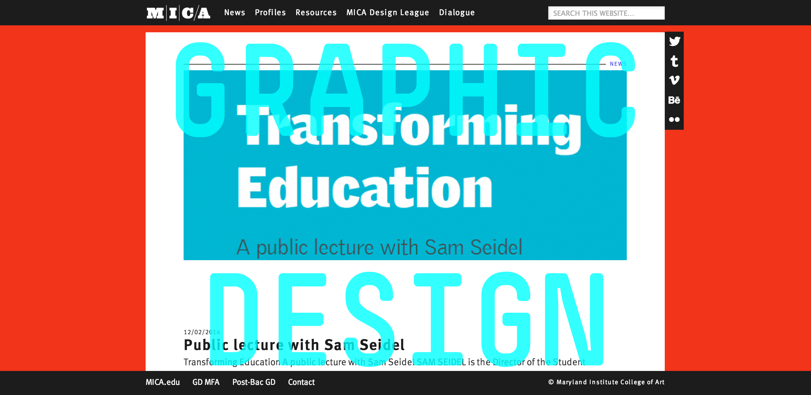
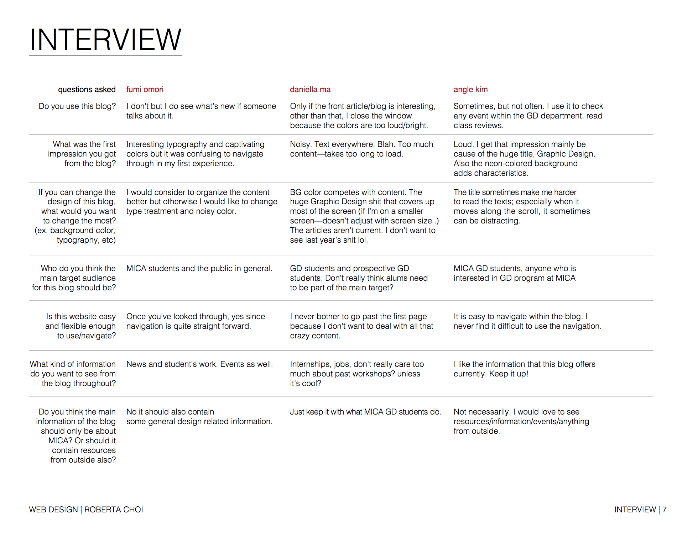
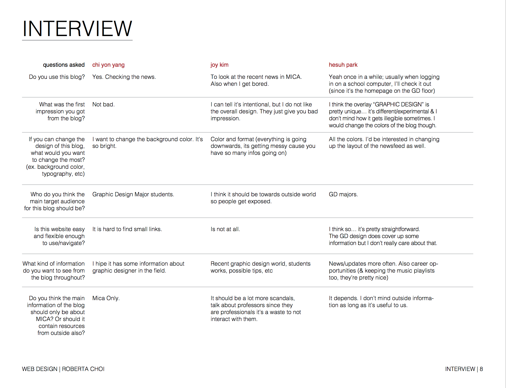
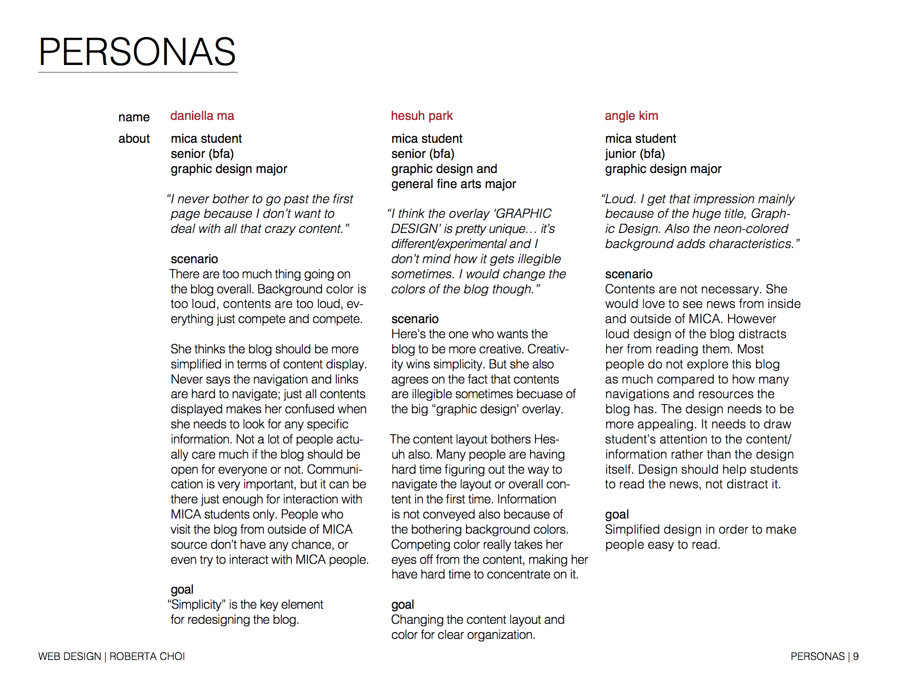
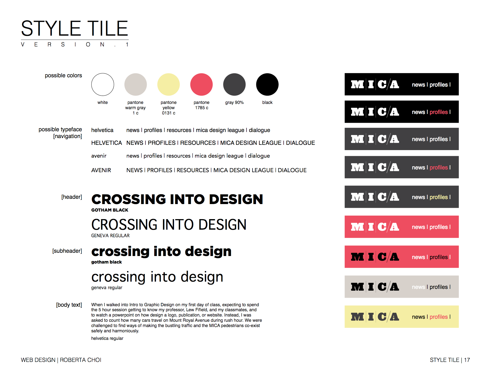
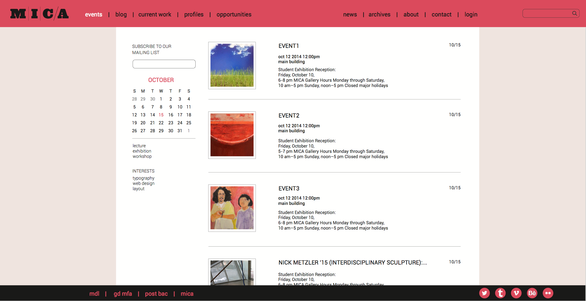
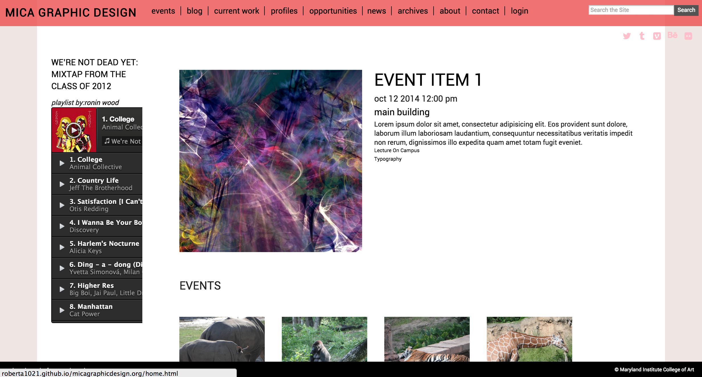
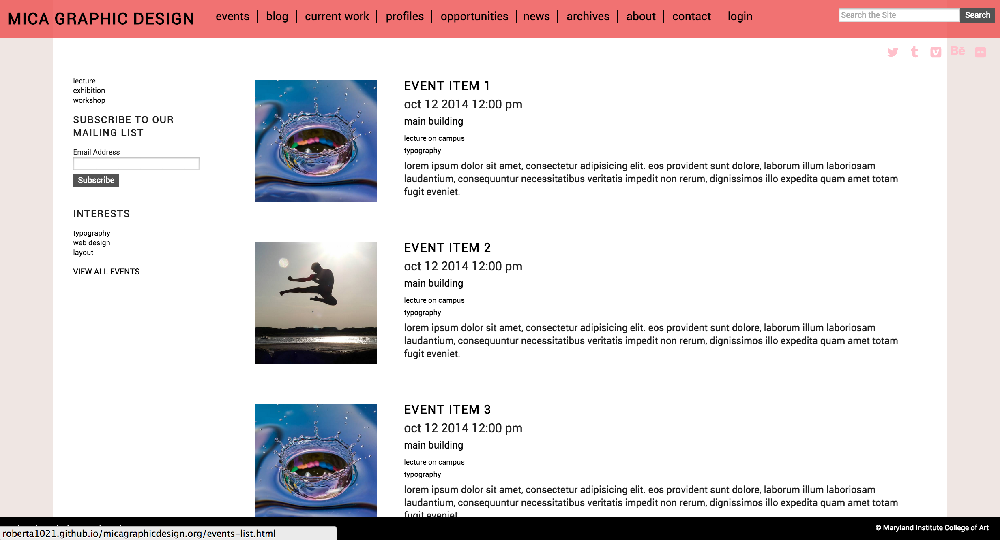

Department Case Study
why redesign?
Inconvenience is the main reason of redesigning our MICA graphic design blog. The colors were vibrant and there were so many navigations that the audience wouldn't even care about. Too complicated site maps even made the blog inflexible. Far from being used actively, the blog needed to be very approachable, in both design wise and information wise.
who are we designing for?
Through the interviews, many people wanted the blog to be focused on MICA students. It should be first accessible enough for students before we further focus on to the people off campus.  
initial exploration and overview
In order to draw the audience's attention, two main elements were mentioned as most important things to edit. First was design, second was content. The opening page of the blog only makes students exit out of it, or change the address to go to the certain websites. Vibrant color only makes the blog overwhelming, it even makes people avoid reading through the content. Most people were distracted by a big "graphic design" sign overlapping on the center of the page. It could make the blog unique, but it is considered 'too much' when the audience thinks it's distracting.Color palette reformation was the first thing to do. I came up with some color palettes that would make the blog alive, but calm at the same time so that people don't feel any discomfort while they read through pages. For example, background should stay calm to make the audience's eyes comfortable. Instead of having vibrant colors go all over the page, I've decided to make only header/footer(navigation bars) into solid/vibrant colors.
Clear hierarchy is very crucial. Use of typefaces have narrowed down to one, which has various weights and styles. A lot of information, a lot of photographs. When colors and typography are too strong in design, it might compete with any photographs displayed, not conveying the right idea to the audience.
The overall design need to be clean. It should fit and be cohesive with any other materials and contents that will be uploaded on the blog in the future.
 
accomplishments
Couple of changes were made throughout the website. The navigation bar's opacity went down in order to avoid both header and footer getting cramped. Sidebar was created for different use compared to the rough draft that I had originally. Any important headline or objects that were displayed on each page are moved onto the sidebar; people can find main topic of the page easily. Vibrant colors all toned down. Social icons went up to the top, right under the top navigation bar. Excluding any useless emphasis such as heavy font weights, I made the blog lighter in both tone and typefaces, letting the blog more approachable to the audience. 